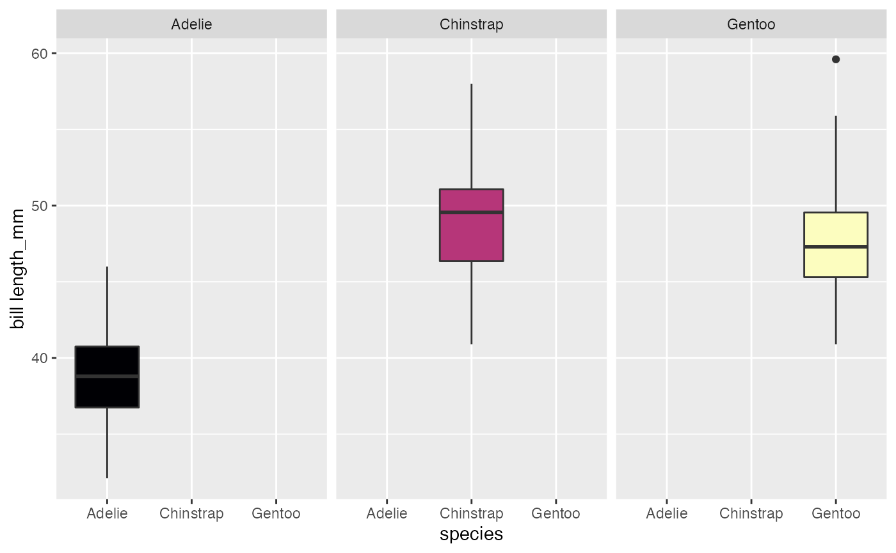
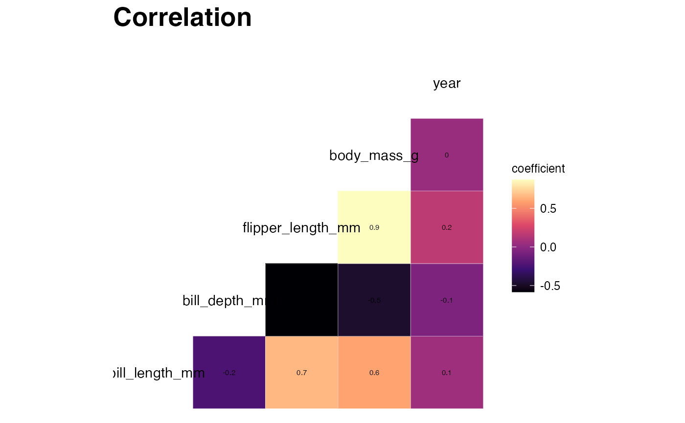
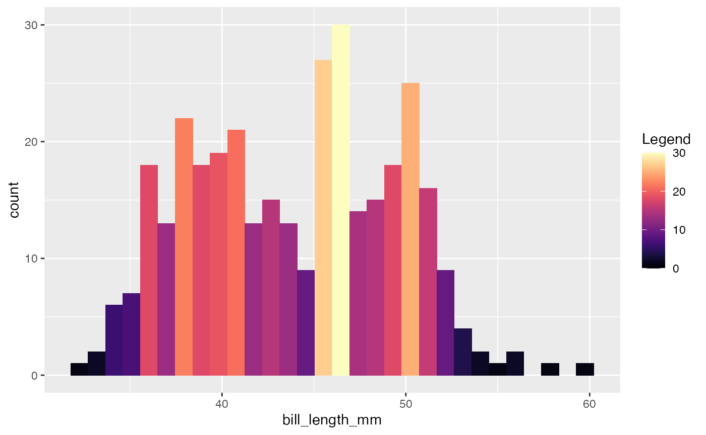
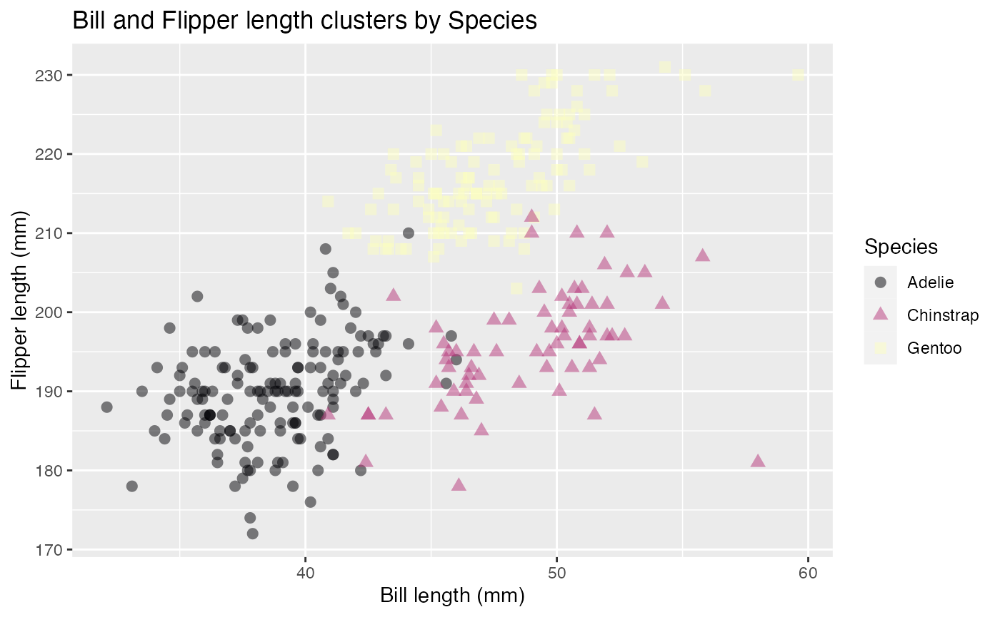

magmavizR-vignette.RmdThe magmavizR library can be loaded by using the commands below:
## # A tibble: 344 × 8
## species island bill_length_mm bill_depth_mm flipper_length_mm body_mass_g
## <fct> <fct> <dbl> <dbl> <int> <int>
## 1 Adelie Torgersen 39.1 18.7 181 3750
## 2 Adelie Torgersen 39.5 17.4 186 3800
## 3 Adelie Torgersen 40.3 18 195 3250
## 4 Adelie Torgersen NA NA NA NA
## 5 Adelie Torgersen 36.7 19.3 193 3450
## 6 Adelie Torgersen 39.3 20.6 190 3650
## 7 Adelie Torgersen 38.9 17.8 181 3625
## 8 Adelie Torgersen 39.2 19.6 195 4675
## 9 Adelie Torgersen 34.1 18.1 193 3475
## 10 Adelie Torgersen 42 20.2 190 4250
## # … with 334 more rows, and 2 more variables: sex <fct>, year <int>The four data visualization functions included in the package along with the usage are outlined below:
Returns a boxplot based on the data frame, a numerical feature to view the distribution of and a categorical feature to bucket data into categories. Additionally, there is a boolean option to facet the boxplots into separate charts.
boxplot(penguins_data, species, bill_length_mm, facet = TRUE)
Returns a correlation plot based on the numerical features present in the data frame. Additionally, it will print the correlated numerical feature pairs along with their correlation values.
corrplot(penguins_data, print_corr = TRUE, title = "Correlation")
Returns a histogram based on the data frame and a numeric feature to plot on the x-axis. The y-axis will display the result of the following aggregating functions:
count
ncount
density
ndensity
width
histogram(penguins_data, bill_length_mm, "..count..")
Returns a scatterplot based on the data frame and two numerical feature names passed as the required inputs. There are auxiliary inputs that provide the flexibility to:
Color code or change the shape of the data points on a categorical variable
Set a title to the plot, x-axis, y-axis and color legend
Change the opacity and size of the data points
Set the scale of the x-axis and y-axis to start from zero
scatterplot(penguins_data, bill_length_mm, flipper_length_mm, species, "Bill and Flipper length clusters by Species", 0.5, 2.5, "Bill length (mm)", "Flipper length (mm)", "", FALSE, FALSE, TRUE)